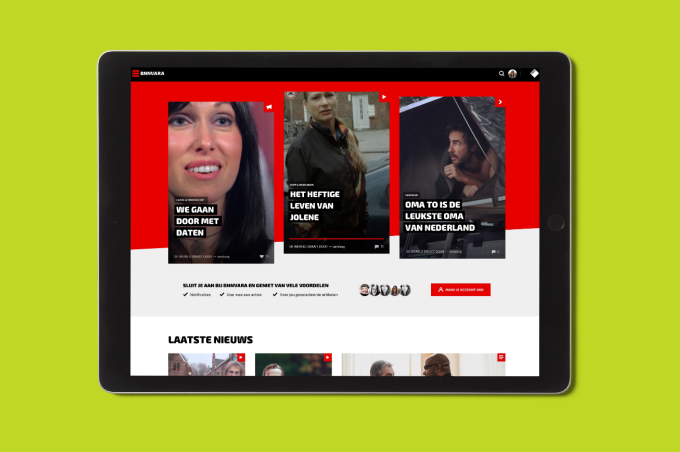
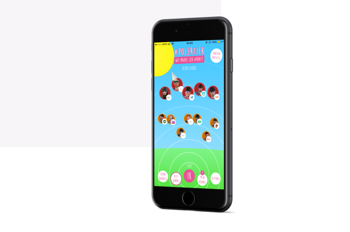

Work
About
Contact
Hi, my name is
Martijn
I’m committed to making digital products, services and experiences a little more enjoyable
Currently working as product designer at Effectory
Contact
See my work
A selection of projects
Effectory
Finding a more efficient way to manage survey participants
View case

BNNVARA
A new online strategy for Netherlands’ largest broadcasting association
View case

BNNVARA
Pressure cooking an app to encourage young people to vote
View case